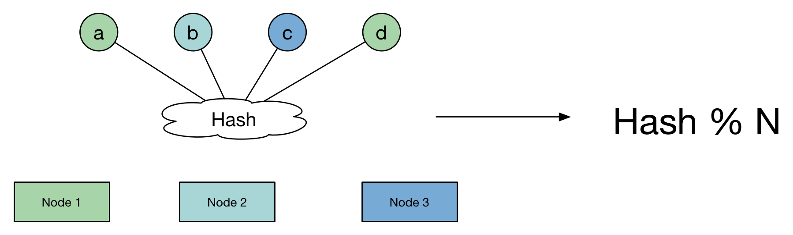
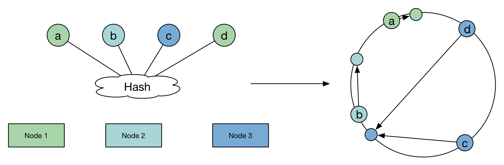
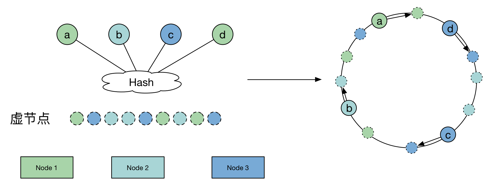
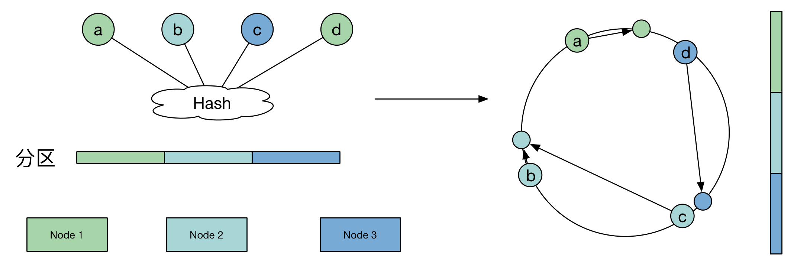

<!DOCTYPE html>
<html lang="zh-CN">
<head><meta name="generator" content="Hexo 3.8.0">

    <!--[if lt IE 9]>
        <style>body {display: none; background: none !important} </style>
        <meta http-equiv="Refresh" Content="0; url=//outdatedbrowser.com/" />
    <![endif]-->

<meta charset="utf-8">
<meta http-equiv="X-UA-Compatible" content="IE=edge, chrome=1">
<meta name="viewport" content="width=device-width, initial-scale=1, maximum-scale=1, user-scalable=no">
<meta name="format-detection" content="telephone=no">
<meta name="author" content="康兴华">


<meta name="description" content="概述在维基百科中，是这么定义的  一致哈希是一种特殊的哈希算法。在使用一致哈希算法后，哈希表槽位数（大小）的改变平均只需要对 K/n个关键字重新映射，其中K是关键字的数量， n是槽位数量。然而在传统的哈希表中，添加或删除一个槽位的几乎需要对所有关键字进行重新映射。">
<meta name="keywords" content="笔记">
<meta property="og:type" content="article">
<meta property="og:title" content="一致性哈希算法的理解与实践(Java)">
<meta property="og:url" content="http://kxh.ink/2016/10/26/Consistent-Hashing/index.html">
<meta property="og:site_name" content="康兴华">
<meta property="og:description" content="概述在维基百科中，是这么定义的  一致哈希是一种特殊的哈希算法。在使用一致哈希算法后，哈希表槽位数（大小）的改变平均只需要对 K/n个关键字重新映射，其中K是关键字的数量， n是槽位数量。然而在传统的哈希表中，添加或删除一个槽位的几乎需要对所有关键字进行重新映射。">
<meta property="og:locale" content="zh-CN">
<meta property="og:image" content="http://kxh.ink/2016/10/26/Consistent-Hashing/fe155f98-3a5e-11e6-834d-193e6f85afcd.png">
<meta property="og:image" content="http://kxh.ink/2016/10/26/Consistent-Hashing/0e8fea32-3a5f-11e6-84b5-ff101495cf49.png">
<meta property="og:image" content="http://kxh.ink/2016/10/26/Consistent-Hashing/8c9e6caa-3a5f-11e6-87ad-fdb462b76aef.png">
<meta property="og:image" content="http://kxh.ink/2016/10/26/Consistent-Hashing/a0e32fde-3a5f-11e6-969d-085f64220e63.png">
<meta property="og:image" content="http://kxh.ink/2016/10/26/Consistent-Hashing/b01139ec-3a5f-11e6-965a-070f5c4c0afa.png">
<meta property="og:updated_time" content="2018-10-22T06:34:56.106Z">
<meta name="twitter:card" content="summary">
<meta name="twitter:title" content="一致性哈希算法的理解与实践(Java)">
<meta name="twitter:description" content="概述在维基百科中，是这么定义的  一致哈希是一种特殊的哈希算法。在使用一致哈希算法后，哈希表槽位数（大小）的改变平均只需要对 K/n个关键字重新映射，其中K是关键字的数量， n是槽位数量。然而在传统的哈希表中，添加或删除一个槽位的几乎需要对所有关键字进行重新映射。">
<meta name="twitter:image" content="http://kxh.ink/2016/10/26/Consistent-Hashing/fe155f98-3a5e-11e6-834d-193e6f85afcd.png">

<link rel="apple-touch-icon" href="/apple-touch-icon.png">


    <link rel="alternate" href="/atom.xml" title="康兴华" type="application/atom+xml">


    <link rel="shortcut icon" href="/favicon.png">


    <link href="//cdn.bootcss.com/animate.css/3.5.1/animate.min.css" rel="stylesheet">


    <link href="//cdn.bootcss.com/fancybox/2.1.5/jquery.fancybox.min.css" rel="stylesheet">


    <script src="//cdn.bootcss.com/pace/1.0.2/pace.min.js"></script>
    <link href="//cdn.bootcss.com/pace/1.0.2/themes/blue/pace-theme-minimal.css" rel="stylesheet">


<link rel="stylesheet" href="/css/style.css">


<link href="//cdn.bootcss.com/font-awesome/4.6.3/css/font-awesome.min.css" rel="stylesheet">


<title>一致性哈希算法的理解与实践(Java) | 康兴华</title>

<script src="//cdn.bootcss.com/jquery/2.2.4/jquery.min.js"></script>
<script src="//cdn.bootcss.com/clipboard.js/1.5.10/clipboard.min.js"></script>

<script>
    var yiliaConfig = {
        fancybox: true,
        animate: true,
        isHome: false,
        isPost: true,
        isArchive: false,
        isTag: false,
        isCategory: false,
        fancybox_js: "//cdn.bootcss.com/fancybox/2.1.5/jquery.fancybox.min.js",
        scrollreveal: "//cdn.bootcss.com/scrollReveal.js/3.1.4/scrollreveal.min.js",
        search: true
    }
</script>


    <script> yiliaConfig.jquery_ui = [false]; </script>


    <script> yiliaConfig.rootUrl = "\/";</script>


</head></html>
<body>
  <div id="container">
    <div class="left-col">
    <div class="overlay"></div>
<div class="intrude-less">
    <header id="header" class="inner">
        <a href="/" class="profilepic">
            
        </a>
        <hgroup>
          <h1 class="header-author"><a href="/">康兴华</a></h1>
        </hgroup>

        

        
            <form id="search-form">
            <input type="text" id="local-search-input" name="q" placeholder="search..." class="search form-control" autocomplete="off" autocorrect="off" searchonload="true">
            <i class="fa fa-times" onclick="resetSearch()"></i>
            </form>
            <div id="local-search-result"></div>
            <p class="no-result">No results found <i class="fa fa-spinner fa-pulse"></i></p>
        


        
            <div id="switch-btn" class="switch-btn">
                <div class="icon">
                    <div class="icon-ctn">
                        <div class="icon-wrap icon-house" data-idx="0">
                            <div class="birdhouse"></div>
                            <div class="birdhouse_holes"></div>
                        </div>
                        <div class="icon-wrap icon-ribbon hide" data-idx="1">
                            <div class="ribbon"></div>
                        </div>
                        
                        <div class="icon-wrap icon-link hide" data-idx="2">
                            <div class="loopback_l"></div>
                            <div class="loopback_r"></div>
                        </div>
                        
                        
                        <div class="icon-wrap icon-me hide" data-idx="3">
                            <div class="user"></div>
                            <div class="shoulder"></div>
                        </div>
                        
                    </div>
                    
                </div>
                <div class="tips-box hide">
                    <div class="tips-arrow"></div>
                    <ul class="tips-inner">
                        <li>菜单</li>
                        <li>标签</li>
                        
                        <li>友情链接</li>
                        
                        
                        <li>关于我</li>
                        
                    </ul>
                </div>
            </div>
        

        <div id="switch-area" class="switch-area">
            <div class="switch-wrap">
                <section class="switch-part switch-part1">
                    <nav class="header-menu">
                        <ul>
                        
                            <li><a href="/">主页</a></li>
                        
                            <li><a href="/archives/">所有文章</a></li>
                        
                            <li><a href="/tags/">标签云</a></li>
                        
                            <li><a href="/about/">关于我</a></li>
                        
                        </ul>
                    </nav>
                    <nav class="header-nav">
                        <ul class="social">
                            
                                <a class="fa Email" href="mailto:kangxinghua@gmail.com" title="Email"></a>
                            
                                <a class="fa GitHub" href="https://github.com/kangxinghua" title="GitHub"></a>
                            
                                <a class="fa RSS" href="/atom.xml" title="RSS"></a>
                            
                        </ul>
                    </nav>
                </section>
                
                
                <section class="switch-part switch-part2">
                    <div class="widget tagcloud" id="js-tagcloud">
                        <ul class="tag-list"><li class="tag-list-item"><a class="tag-list-link" href="/tags/Java-并发编程实战/">Java 并发编程实战</a></li><li class="tag-list-item"><a class="tag-list-link" href="/tags/笔记/">笔记</a></li></ul>
                    </div>
                </section>
                
                
                
                <section class="switch-part switch-part3">
                    <div id="js-friends">
                    
                      <a class="main-nav-link switch-friends-link" href="https://hexo.io">Hexo</a>
                    
                      <a class="main-nav-link switch-friends-link" href="https://pages.github.com/">GitHub</a>
                    
                      <a class="main-nav-link switch-friends-link" href="http://moxfive.xyz/">MOxFIVE</a>
                    
                    </div>
                </section>
                

                
                
                <section class="switch-part switch-part4">
                
                    <div id="js-aboutme">专注于前端</div>
                </section>
                
            </div>
        </div>
    </header>                
</div>
    </div>
    <div class="mid-col">
      <nav id="mobile-nav">
      <div class="overlay">
          <div class="slider-trigger"></div>
          <h1 class="header-author js-mobile-header hide"><a href="/" title="回到主页">康兴华</a></h1>
      </div>
    <div class="intrude-less">
        <header id="header" class="inner">
            <a href="/" class="profilepic">
                
            </a>
            <hgroup>
              <h1 class="header-author"><a href="/" title="回到主页">康兴华</a></h1>
            </hgroup>
            
            <nav class="header-menu">
                <ul>
                
                    <li><a href="/">主页</a></li>
                
                    <li><a href="/archives/">所有文章</a></li>
                
                    <li><a href="/tags/">标签云</a></li>
                
                    <li><a href="/about/">关于我</a></li>
                
                <div class="clearfix"></div>
                </ul>
            </nav>
            <nav class="header-nav">
                        <ul class="social">
                            
                                <a class="fa Email" target="_blank" href="mailto:kangxinghua@gmail.com" title="Email"></a>
                            
                                <a class="fa GitHub" target="_blank" href="https://github.com/kangxinghua" title="GitHub"></a>
                            
                                <a class="fa RSS" target="_blank" href="/atom.xml" title="RSS"></a>
                            
                        </ul>
            </nav>
        </header>                
    </div>
    <link class="menu-list" tags="标签" friends="友情链接" about="关于我">
</nav>
      <div class="body-wrap"><article id="post-Consistent-Hashing" class="article article-type-post" itemscope="" itemprop="blogPost">
  
    <div class="article-meta">
      <a href="/2016/10/26/Consistent-Hashing/" class="article-date">
      <time datetime="2016-10-26T14:41:42.000Z" itemprop="datePublished">2016-10-26</time>
</a>


    </div>
  
  <div class="article-inner">
    
      <input type="hidden" class="isFancy">
    
    
      <header class="article-header">
        
  
    <h1 class="article-title" itemprop="name">
      一致性哈希算法的理解与实践(Java)
    </h1>
  

      </header>
      
      <div class="article-info article-info-post">
        

        
    <div class="article-tag tagcloud">
        <ul class="article-tag-list"><li class="article-tag-list-item"><a class="article-tag-list-link" href="/tags/笔记/">笔记</a></li></ul>
    </div>

        <div class="clearfix"></div>
      </div>
      
    
    <div class="article-entry" itemprop="articleBody">
      
          
        <h2 id="概述"><a href="#概述" class="headerlink" title="概述"></a>概述</h2><p>在维基百科中，是这么定义的</p>
<blockquote>
<p>一致哈希是一种特殊的哈希算法。在使用一致哈希算法后，哈希表槽位数（大小）的改变平均只需要对 K/n个关键字重新映射，其中K是关键字的数量， n是槽位数量。然而在传统的哈希表中，添加或删除一个槽位的几乎需要对所有关键字进行重新映射。<br><a id="more"></a></p>
</blockquote>
<h2 id="引出"><a href="#引出" class="headerlink" title="引出"></a>引出</h2><p>我们在上文中已经介绍了一致性Hash算法的基本优势，我们看到了该算法主要解决的问题是：当slot数发生变化时，能够尽量少的移动数据。那么，我们思考一下，普通的Hash算法是如何实现？又存在什么问题呢？<br>那么我们引出一个问题：</p>
<blockquote>
<p>假设有1000w个数据项，100个存储节点，请设计一种算法合理地将他们存储在这些节点上。  </p>
</blockquote>
<p>看一看普通Hash算法的原理：<br></p>
<p>算法的核心计算如下</p>
<figure class="highlight java"><table><tr><td class="gutter"><pre><span class="line">1</span><br><span class="line">2</span><br><span class="line">3</span><br><span class="line">4</span><br><span class="line">5</span><br><span class="line">6</span><br><span class="line">7</span><br><span class="line">8</span><br><span class="line">9</span><br><span class="line">10</span><br><span class="line">11</span><br><span class="line">12</span><br><span class="line">13</span><br><span class="line">14</span><br><span class="line">15</span><br><span class="line">16</span><br><span class="line">17</span><br><span class="line">18</span><br><span class="line">19</span><br><span class="line">20</span><br><span class="line">21</span><br><span class="line">22</span><br><span class="line">23</span><br><span class="line">24</span><br><span class="line">25</span><br><span class="line">26</span><br><span class="line">27</span><br><span class="line">28</span><br><span class="line">29</span><br><span class="line">30</span><br><span class="line">31</span><br><span class="line">32</span><br></pre></td><td class="code"><pre><span class="line"><span class="keyword">import</span> java.util.Arrays;</span><br><span class="line"><span class="keyword">import</span> java.util.Collections;</span><br><span class="line"></span><br><span class="line"><span class="keyword">import</span> <span class="keyword">static</span> com.kxh.hash.Utils.hash;</span><br><span class="line"></span><br><span class="line"><span class="comment">/**</span></span><br><span class="line"><span class="comment"> * Created by KangXinghua on 2016/10/26.</span></span><br><span class="line"><span class="comment"> */</span></span><br><span class="line"><span class="keyword">public</span> <span class="class"><span class="keyword">class</span> <span class="title">NormalHash</span> </span>&#123;</span><br><span class="line"></span><br><span class="line">    <span class="function"><span class="keyword">public</span> <span class="keyword">static</span> <span class="keyword">void</span> <span class="title">main</span><span class="params">(String[] args)</span> </span>&#123;</span><br><span class="line">        Integer ITEMS = <span class="number">10000000</span>;</span><br><span class="line">        Integer NODES = <span class="number">100</span>;</span><br><span class="line"></span><br><span class="line">        Integer[] node_stat = <span class="keyword">new</span> Integer[NODES];</span><br><span class="line"></span><br><span class="line">        <span class="keyword">for</span> (Integer i = <span class="number">0</span>; i &lt; ITEMS; i++) &#123;</span><br><span class="line">            <span class="keyword">int</span> h = hash(i.toString());</span><br><span class="line">            <span class="keyword">int</span> n = h % NODES;</span><br><span class="line">            <span class="keyword">if</span> (node_stat[n] == <span class="keyword">null</span>)</span><br><span class="line">                node_stat[n] = <span class="number">0</span>;</span><br><span class="line">            node_stat[n] += <span class="number">1</span>;</span><br><span class="line">        &#125;</span><br><span class="line"></span><br><span class="line">        <span class="keyword">int</span> _ave = ITEMS / NODES;</span><br><span class="line">        <span class="keyword">int</span> _max = Collections.max(Arrays.asList(node_stat));</span><br><span class="line">        <span class="keyword">int</span> _min = Collections.min(Arrays.asList(node_stat));</span><br><span class="line">        System.out.printf(<span class="string">"Ave: %d%n"</span>, _ave);</span><br><span class="line">        System.out.printf(<span class="string">"Max: %d\t(%.2f%%)%n"</span>, _max, (_max - _ave) * <span class="number">100.0</span> / _ave);</span><br><span class="line">        System.out.printf(<span class="string">"Min: %d\t(%.2f%%)%n"</span>, _min, (_ave - _min) * <span class="number">100.0</span> / _ave);</span><br><span class="line">    &#125;</span><br><span class="line">&#125;</span><br></pre></td></tr></table></figure>
<blockquote>
<p>Ave: 100000<br>Max: 100653   (0.65%)<br>Min: 99160    (0.84%)</p>
</blockquote>
<p>从上述结果可以发现，普通的Hash算法均匀地将这些数据项打散到了这些节点上，并且分布最少和最多的存储节点数据项数目小于1%。之所以分布均匀，主要是依赖Hash算法能够比较随机的分布。</p>
<p>然而，我们看看存在一个问题，由于该算法使用节点数取余的方法，强依赖node的数目，因此，当是node数发生变化的时候，item所对应的node发生剧烈变化，而发生变化的成本就是我们需要在node数发生变化的时候，数据需要迁移，这对存储产品来说显然是不能忍的，我们观察一下增加node后，数据项移动的情况：<br><figure class="highlight java"><table><tr><td class="gutter"><pre><span class="line">1</span><br><span class="line">2</span><br><span class="line">3</span><br><span class="line">4</span><br><span class="line">5</span><br><span class="line">6</span><br><span class="line">7</span><br><span class="line">8</span><br><span class="line">9</span><br><span class="line">10</span><br><span class="line">11</span><br><span class="line">12</span><br><span class="line">13</span><br><span class="line">14</span><br><span class="line">15</span><br><span class="line">16</span><br><span class="line">17</span><br><span class="line">18</span><br><span class="line">19</span><br><span class="line">20</span><br><span class="line">21</span><br><span class="line">22</span><br><span class="line">23</span><br><span class="line">24</span><br><span class="line">25</span><br><span class="line">26</span><br><span class="line">27</span><br><span class="line">28</span><br></pre></td><td class="code"><pre><span class="line"><span class="keyword">import</span> <span class="keyword">static</span> com.kxh.hash.Utils.hash;</span><br><span class="line"></span><br><span class="line"><span class="comment">/**</span></span><br><span class="line"><span class="comment"> * Created by KangXinghua on 2016/10/26.</span></span><br><span class="line"><span class="comment"> */</span></span><br><span class="line"><span class="keyword">public</span> <span class="class"><span class="keyword">class</span> <span class="title">NormalHashAdd</span> </span>&#123;</span><br><span class="line"></span><br><span class="line">    <span class="function"><span class="keyword">public</span> <span class="keyword">static</span> <span class="keyword">void</span> <span class="title">main</span><span class="params">(String[] args)</span> </span>&#123;</span><br><span class="line">        Integer ITEMS = <span class="number">10000000</span>;</span><br><span class="line">        Integer NODES = <span class="number">100</span>;</span><br><span class="line">        Integer NEW_NODES = <span class="number">101</span>;</span><br><span class="line"></span><br><span class="line">        Integer change = <span class="number">0</span>;</span><br><span class="line"></span><br><span class="line">        <span class="keyword">for</span> (Integer i = <span class="number">0</span>; i &lt; ITEMS; i++) &#123;</span><br><span class="line">            <span class="keyword">int</span> h = hash(i.toString());</span><br><span class="line"></span><br><span class="line">            <span class="keyword">int</span> n = h % NODES;</span><br><span class="line">            <span class="keyword">int</span> n_new = h % NEW_NODES;</span><br><span class="line"></span><br><span class="line">            <span class="keyword">if</span> (n_new != n)</span><br><span class="line">                change += <span class="number">1</span>;</span><br><span class="line">        &#125;</span><br><span class="line"></span><br><span class="line">        System.out.printf(<span class="string">"Change: %d\t(%.2f%%)%n"</span>, change, change * <span class="number">100.0</span> / ITEMS);</span><br><span class="line">    &#125;</span><br><span class="line"></span><br><span class="line">&#125;</span><br></pre></td></tr></table></figure></p>
<blockquote>
<p>Change: 9900492   (99.00%)</p>
</blockquote>
<p>翻译一下就是，<strong>如果有100个item，当增加一个node，之前99%的数据都需要重新移动。</strong>  </p>
<p>这显然是不能忍的，普通哈希算法的问题我们已经发现了，如何对其进行改进呢？没错，我们的一致性哈希算法闪亮登场。  </p>
<h2 id="登场"><a href="#登场" class="headerlink" title="登场"></a>登场</h2><p>我们上节介绍了普通Hash算法的劣势，即当node数发生变化（增加、移除）后，数据项会被重新“打散”，导致大部分数据项不能落到原来的节点上，从而导致大量数据需要迁移。<br>那么，一个亟待解决的问题就变成了：当node数发生变化时，如何保证尽量少引起迁移呢？即<strong>当增加或者删除节点时，对于大多数item，保证原来分配到的某个node，现在仍然应该分配到那个node，将数据迁移量的降到最低。</strong>  </p>
<p>一致性Hash算法的原理是这样的：</p>
<p></p>
<figure class="highlight java"><table><tr><td class="gutter"><pre><span class="line">1</span><br><span class="line">2</span><br><span class="line">3</span><br><span class="line">4</span><br><span class="line">5</span><br><span class="line">6</span><br><span class="line">7</span><br><span class="line">8</span><br><span class="line">9</span><br><span class="line">10</span><br><span class="line">11</span><br><span class="line">12</span><br><span class="line">13</span><br><span class="line">14</span><br><span class="line">15</span><br><span class="line">16</span><br><span class="line">17</span><br><span class="line">18</span><br><span class="line">19</span><br><span class="line">20</span><br><span class="line">21</span><br><span class="line">22</span><br><span class="line">23</span><br><span class="line">24</span><br><span class="line">25</span><br><span class="line">26</span><br><span class="line">27</span><br><span class="line">28</span><br><span class="line">29</span><br><span class="line">30</span><br><span class="line">31</span><br><span class="line">32</span><br><span class="line">33</span><br><span class="line">34</span><br><span class="line">35</span><br><span class="line">36</span><br><span class="line">37</span><br><span class="line">38</span><br><span class="line">39</span><br><span class="line">40</span><br><span class="line">41</span><br><span class="line">42</span><br><span class="line">43</span><br><span class="line">44</span><br><span class="line">45</span><br><span class="line">46</span><br><span class="line">47</span><br><span class="line">48</span><br><span class="line">49</span><br><span class="line">50</span><br><span class="line">51</span><br><span class="line">52</span><br><span class="line">53</span><br></pre></td><td class="code"><pre><span class="line"><span class="keyword">import</span> java.util.ArrayList;</span><br><span class="line"><span class="keyword">import</span> java.util.Collections;</span><br><span class="line"><span class="keyword">import</span> java.util.List;</span><br><span class="line"></span><br><span class="line"><span class="keyword">import</span> <span class="keyword">static</span> org.mycommon.hash.Utils.hash;</span><br><span class="line"></span><br><span class="line"></span><br><span class="line"><span class="comment">/**</span></span><br><span class="line"><span class="comment"> * Created by KangXinghua on 2016/10/27.</span></span><br><span class="line"><span class="comment"> */</span></span><br><span class="line"><span class="keyword">public</span> <span class="class"><span class="keyword">class</span> <span class="title">ConsistHashAdd</span> </span>&#123;</span><br><span class="line"></span><br><span class="line">    <span class="function"><span class="keyword">public</span> <span class="keyword">static</span> <span class="keyword">void</span> <span class="title">main</span><span class="params">(String[] args)</span> </span>&#123;</span><br><span class="line">        Integer ITEMS = <span class="number">10000000</span>;</span><br><span class="line">        Integer NODES = <span class="number">100</span>;</span><br><span class="line">        Integer NEW_NODES = <span class="number">101</span>;</span><br><span class="line"></span><br><span class="line">        List&lt;Integer&gt; ring = <span class="keyword">new</span> ArrayList&lt;&gt;();</span><br><span class="line">        List&lt;Integer&gt; new_ring = <span class="keyword">new</span> ArrayList&lt;&gt;();</span><br><span class="line">        Integer change = <span class="number">0</span>;</span><br><span class="line"></span><br><span class="line">        <span class="keyword">for</span> (Integer i = <span class="number">0</span>; i &lt; NODES; i++) &#123;</span><br><span class="line">            <span class="keyword">int</span> h = hash(i.toString());</span><br><span class="line">            ring.add(h);</span><br><span class="line">        &#125;</span><br><span class="line">        Collections.sort(ring);</span><br><span class="line"></span><br><span class="line">        <span class="keyword">for</span> (Integer i = <span class="number">0</span>; i &lt; NEW_NODES; i++) &#123;</span><br><span class="line">            <span class="keyword">int</span> h = hash(i.toString());</span><br><span class="line">            new_ring.add(h);</span><br><span class="line">        &#125;</span><br><span class="line">        Collections.sort(new_ring);</span><br><span class="line"></span><br><span class="line">        <span class="keyword">for</span> (Integer i = <span class="number">0</span>; i &lt; ITEMS; i++) &#123;</span><br><span class="line">            <span class="keyword">int</span> h = hash(i.toString());</span><br><span class="line">            <span class="keyword">int</span> n = bisectLeft(ring, h) % NODES;</span><br><span class="line">            <span class="keyword">int</span> n_new = bisectLeft(new_ring, h) % NEW_NODES;</span><br><span class="line"></span><br><span class="line">            <span class="keyword">if</span> (n_new != n)</span><br><span class="line">                change += <span class="number">1</span>;</span><br><span class="line">        &#125;</span><br><span class="line"></span><br><span class="line">        System.out.printf(<span class="string">"Change: %d\t(%.2f%%)%n"</span>, change, change * <span class="number">100.0</span> / ITEMS);</span><br><span class="line">    &#125;</span><br><span class="line"></span><br><span class="line">    <span class="function"><span class="keyword">public</span> <span class="keyword">static</span> <span class="keyword">int</span> <span class="title">bisectLeft</span><span class="params">(List&lt;Integer&gt; list, Integer key)</span> </span>&#123;</span><br><span class="line">        <span class="keyword">int</span> idx = Math.min(list.size(), Math.abs(Collections.binarySearch(list, key)));</span><br><span class="line">        <span class="keyword">while</span> (idx &gt; <span class="number">0</span> &amp;&amp; list.get(idx - <span class="number">1</span>) &gt;= key) &#123;</span><br><span class="line">            idx--;</span><br><span class="line">        &#125;</span><br><span class="line">        <span class="keyword">return</span> idx;</span><br><span class="line">    &#125;</span><br><span class="line">&#125;</span><br></pre></td></tr></table></figure>
<p>我们依然对其进行了实现ConsistHashAdd.java，并且观察了数据迁移的结果：</p>
<blockquote>
<p>Change: 6379941   (63.80%)</p>
</blockquote>
<p>虽然一致性Hash算法解决了节点变化导致的数据迁移问题，但是，我们回过头来再看看数据项分布的均匀性，进行了一致性Hash算法的实现ConsistHash.java：<br><figure class="highlight java"><table><tr><td class="gutter"><pre><span class="line">1</span><br><span class="line">2</span><br><span class="line">3</span><br><span class="line">4</span><br><span class="line">5</span><br><span class="line">6</span><br><span class="line">7</span><br><span class="line">8</span><br><span class="line">9</span><br><span class="line">10</span><br><span class="line">11</span><br><span class="line">12</span><br><span class="line">13</span><br><span class="line">14</span><br><span class="line">15</span><br><span class="line">16</span><br><span class="line">17</span><br><span class="line">18</span><br><span class="line">19</span><br><span class="line">20</span><br><span class="line">21</span><br><span class="line">22</span><br><span class="line">23</span><br><span class="line">24</span><br><span class="line">25</span><br><span class="line">26</span><br><span class="line">27</span><br><span class="line">28</span><br><span class="line">29</span><br><span class="line">30</span><br><span class="line">31</span><br><span class="line">32</span><br><span class="line">33</span><br><span class="line">34</span><br><span class="line">35</span><br><span class="line">36</span><br><span class="line">37</span><br><span class="line">38</span><br><span class="line">39</span><br><span class="line">40</span><br><span class="line">41</span><br></pre></td><td class="code"><pre><span class="line"><span class="keyword">import</span> java.util.*;</span><br><span class="line"></span><br><span class="line"><span class="keyword">import</span> <span class="keyword">static</span> com.kxh.hash.Utils.bisectLeft;</span><br><span class="line"><span class="keyword">import</span> <span class="keyword">static</span> com.kxh.hash.Utils.hash;</span><br><span class="line"></span><br><span class="line"><span class="comment">/**</span></span><br><span class="line"><span class="comment"> * Created by KangXinghua on 2016/10/27.</span></span><br><span class="line"><span class="comment"> */</span></span><br><span class="line"><span class="keyword">public</span> <span class="class"><span class="keyword">class</span> <span class="title">ConsistHash</span> </span>&#123;</span><br><span class="line"></span><br><span class="line">    <span class="function"><span class="keyword">public</span> <span class="keyword">static</span> <span class="keyword">void</span> <span class="title">main</span><span class="params">(String[] args)</span> </span>&#123;</span><br><span class="line">        Integer ITEMS = <span class="number">10000000</span>;</span><br><span class="line">        Integer NODES = <span class="number">100</span>;</span><br><span class="line"></span><br><span class="line">        List&lt;Integer&gt; ring = <span class="keyword">new</span> ArrayList&lt;&gt;();</span><br><span class="line">        Integer[] node_stat = <span class="keyword">new</span> Integer[NODES];</span><br><span class="line">        Map&lt;Integer, Integer&gt; hash2node = <span class="keyword">new</span> HashMap&lt;&gt;();</span><br><span class="line"></span><br><span class="line">        <span class="keyword">for</span> (Integer i = <span class="number">0</span>; i &lt; NODES; i++) &#123;</span><br><span class="line">            <span class="keyword">int</span> h = hash(i.toString());</span><br><span class="line">            ring.add(h);</span><br><span class="line">            hash2node.put(h, i);</span><br><span class="line">        &#125;</span><br><span class="line">        Collections.sort(ring);</span><br><span class="line"></span><br><span class="line">        <span class="keyword">for</span> (Integer i = <span class="number">0</span>; i &lt; ITEMS; i++) &#123;</span><br><span class="line">            <span class="keyword">int</span> h = hash(i.toString());</span><br><span class="line">            <span class="keyword">int</span> n = bisectLeft(ring, h) % NODES;</span><br><span class="line">            <span class="keyword">if</span> (node_stat[hash2node.get(ring.get(n))] == <span class="keyword">null</span>)</span><br><span class="line">                node_stat[hash2node.get(ring.get(n))] = <span class="number">0</span>;</span><br><span class="line">            node_stat[hash2node.get(ring.get(n))] += <span class="number">1</span>;</span><br><span class="line">        &#125;</span><br><span class="line"></span><br><span class="line">        <span class="keyword">int</span> _ave = ITEMS / NODES;</span><br><span class="line">        <span class="keyword">int</span> _max = Collections.max(Arrays.asList(node_stat));</span><br><span class="line">        <span class="keyword">int</span> _min = Collections.min(Arrays.asList(node_stat));</span><br><span class="line">        System.out.printf(<span class="string">"Ave: %d%n"</span>, _ave);</span><br><span class="line">        System.out.printf(<span class="string">"Max: %d\t(%.2f%%)%n"</span>, _max, (_max - _ave) * <span class="number">100.0</span> / _ave);</span><br><span class="line">        System.out.printf(<span class="string">"Min: %d\t(%.2f%%)%n"</span>, _min, (_ave - _min) * <span class="number">100.0</span> / _ave);</span><br><span class="line">    &#125;</span><br><span class="line">&#125;</span><br></pre></td></tr></table></figure></p>
<p>Ave: 100000<br>Max: 636147 (536.15%)<br>Min: 2423   (97.58%)</p>
<p>这结果简直是简直了，确实非常结果差，分配的很不均匀。我们思考一下，一致性哈希算法分布不均匀的原因是什么？从最初的1000w个数据项经过一般的哈希算法的模拟来看，这些数据项“打散”后，是可以比较均匀分布的。但是引入一致性哈希算法后，为什么就不均匀呢？数据项本身的哈希值并未发生变化，变化的是判断数据项哈希应该落到哪个节点的算法变了。 </p>
<p></p>
<p>因此，主要是因为这100个节点Hash后，在环上分布不均匀，导致了每个节点实际占据环上的区间大小不一造成的。</p>
<h2 id="改进-虚节点"><a href="#改进-虚节点" class="headerlink" title="改进-虚节点"></a>改进-虚节点</h2><p>当我们将node进行哈希后，这些值并没有均匀地落在环上，因此，最终会导致，这些节点所管辖的范围并不均匀，最终导致了数据分布的不均匀。</p>
<p></p>
<p>详细实现请见VirtualConsistHash.java</p>
<figure class="highlight java"><table><tr><td class="gutter"><pre><span class="line">1</span><br><span class="line">2</span><br><span class="line">3</span><br><span class="line">4</span><br><span class="line">5</span><br><span class="line">6</span><br><span class="line">7</span><br><span class="line">8</span><br><span class="line">9</span><br><span class="line">10</span><br><span class="line">11</span><br><span class="line">12</span><br><span class="line">13</span><br><span class="line">14</span><br><span class="line">15</span><br><span class="line">16</span><br><span class="line">17</span><br><span class="line">18</span><br><span class="line">19</span><br><span class="line">20</span><br><span class="line">21</span><br><span class="line">22</span><br><span class="line">23</span><br><span class="line">24</span><br><span class="line">25</span><br><span class="line">26</span><br><span class="line">27</span><br><span class="line">28</span><br><span class="line">29</span><br><span class="line">30</span><br><span class="line">31</span><br><span class="line">32</span><br><span class="line">33</span><br><span class="line">34</span><br><span class="line">35</span><br><span class="line">36</span><br><span class="line">37</span><br><span class="line">38</span><br><span class="line">39</span><br><span class="line">40</span><br><span class="line">41</span><br><span class="line">42</span><br><span class="line">43</span><br><span class="line">44</span><br><span class="line">45</span><br></pre></td><td class="code"><pre><span class="line"><span class="keyword">import</span> java.util.*;</span><br><span class="line"></span><br><span class="line"><span class="keyword">import</span> <span class="keyword">static</span> com.kxh.hash.Utils.bisectLeft;</span><br><span class="line"><span class="keyword">import</span> <span class="keyword">static</span> com.kxh.hash.Utils.hash;</span><br><span class="line"></span><br><span class="line"><span class="comment">/**</span></span><br><span class="line"><span class="comment"> * Created by KangXinghua on 2016/10/30.</span></span><br><span class="line"><span class="comment"> */</span></span><br><span class="line"><span class="keyword">public</span> <span class="class"><span class="keyword">class</span> <span class="title">VirtualConsistHash</span> </span>&#123;</span><br><span class="line"></span><br><span class="line">    <span class="function"><span class="keyword">public</span> <span class="keyword">static</span> <span class="keyword">void</span> <span class="title">main</span><span class="params">(String[] args)</span> </span>&#123;</span><br><span class="line"></span><br><span class="line">        Integer ITEMS = <span class="number">10000000</span>;</span><br><span class="line">        Integer NODES = <span class="number">100</span>;</span><br><span class="line">        Integer VNODES = <span class="number">1000</span>;</span><br><span class="line"></span><br><span class="line">        List&lt;Integer&gt; ring = <span class="keyword">new</span> ArrayList&lt;&gt;();</span><br><span class="line">        Integer[] node_stat = <span class="keyword">new</span> Integer[NODES];</span><br><span class="line">        Map&lt;Integer, Integer&gt; hash2node = <span class="keyword">new</span> HashMap&lt;&gt;();</span><br><span class="line"></span><br><span class="line">        <span class="keyword">for</span> (<span class="keyword">int</span> i = <span class="number">0</span>; i &lt; NODES; i++) &#123;</span><br><span class="line">            <span class="keyword">for</span> (<span class="keyword">int</span> j = <span class="number">0</span>; j &lt; VNODES; j++) &#123;</span><br><span class="line">                <span class="keyword">int</span> h = hash(String.valueOf(i) + String.valueOf(j));</span><br><span class="line">                ring.add(h);</span><br><span class="line">                hash2node.put(h, i);</span><br><span class="line">            &#125;</span><br><span class="line">        &#125;</span><br><span class="line">        Collections.sort(ring);</span><br><span class="line"></span><br><span class="line">        <span class="keyword">for</span> (Integer i = <span class="number">0</span>; i &lt; ITEMS; i++) &#123;</span><br><span class="line">            <span class="keyword">int</span> h = hash(i.toString());</span><br><span class="line">            <span class="keyword">int</span> n = bisectLeft(ring, h) % (NODES * VNODES);</span><br><span class="line">            <span class="keyword">if</span> (node_stat[hash2node.get(ring.get(n))] == <span class="keyword">null</span>)</span><br><span class="line">                node_stat[hash2node.get(ring.get(n))] = <span class="number">0</span>;</span><br><span class="line">            node_stat[hash2node.get(ring.get(n))] += <span class="number">1</span>;</span><br><span class="line">        &#125;</span><br><span class="line"></span><br><span class="line">        <span class="keyword">int</span> _ave = ITEMS / NODES;</span><br><span class="line">        <span class="keyword">int</span> _max = Collections.max(Arrays.asList(node_stat));</span><br><span class="line">        <span class="keyword">int</span> _min = Collections.min(Arrays.asList(node_stat));</span><br><span class="line">        System.out.printf(<span class="string">"Ave: %d%n"</span>, _ave);</span><br><span class="line">        System.out.printf(<span class="string">"Max: %d\t(%.2f%%)%n"</span>, _max, (_max - _ave) * <span class="number">100.0</span> / _ave);</span><br><span class="line">        System.out.printf(<span class="string">"Min: %d\t(%.2f%%)%n"</span>, _min, (_ave - _min) * <span class="number">100.0</span> / _ave);</span><br><span class="line">    &#125;</span><br><span class="line">&#125;</span><br></pre></td></tr></table></figure>
<p>输出结果是这样的：</p>
<blockquote>
<p>Ave: 100000<br>Max: 117707   (17.71%)<br>Min: 9213 (90.79%)</p>
</blockquote>
<p>因此，通过增加虚节点的方法，使得每个节点在环上所“管辖”更加均匀。这样就既保证了在节点变化时，尽可能小的影响数据分布的变化，而同时又保证了数据分布的均匀。也就是靠增加“节点数量”加强管辖区间的均匀。<br>同时，观察增加节点后数据变动情况，详细的代码请见VirtualConsistHashAdd.java：</p>
<figure class="highlight java"><table><tr><td class="gutter"><pre><span class="line">1</span><br><span class="line">2</span><br><span class="line">3</span><br><span class="line">4</span><br><span class="line">5</span><br><span class="line">6</span><br><span class="line">7</span><br><span class="line">8</span><br><span class="line">9</span><br><span class="line">10</span><br><span class="line">11</span><br><span class="line">12</span><br><span class="line">13</span><br><span class="line">14</span><br><span class="line">15</span><br><span class="line">16</span><br><span class="line">17</span><br><span class="line">18</span><br><span class="line">19</span><br><span class="line">20</span><br><span class="line">21</span><br><span class="line">22</span><br><span class="line">23</span><br><span class="line">24</span><br><span class="line">25</span><br><span class="line">26</span><br><span class="line">27</span><br><span class="line">28</span><br><span class="line">29</span><br><span class="line">30</span><br><span class="line">31</span><br><span class="line">32</span><br><span class="line">33</span><br><span class="line">34</span><br><span class="line">35</span><br><span class="line">36</span><br><span class="line">37</span><br><span class="line">38</span><br><span class="line">39</span><br><span class="line">40</span><br><span class="line">41</span><br><span class="line">42</span><br><span class="line">43</span><br><span class="line">44</span><br><span class="line">45</span><br><span class="line">46</span><br><span class="line">47</span><br><span class="line">48</span><br><span class="line">49</span><br><span class="line">50</span><br><span class="line">51</span><br><span class="line">52</span><br></pre></td><td class="code"><pre><span class="line"><span class="keyword">import</span> java.util.*;</span><br><span class="line"></span><br><span class="line"><span class="keyword">import</span> <span class="keyword">static</span> com.kxh.hash.Utils.bisectLeft;</span><br><span class="line"><span class="keyword">import</span> <span class="keyword">static</span> com.kxh.hash.Utils.hash;</span><br><span class="line"></span><br><span class="line"><span class="comment">/**</span></span><br><span class="line"><span class="comment"> * Created by KangXinghua on 2016/10/30.</span></span><br><span class="line"><span class="comment"> */</span></span><br><span class="line"><span class="keyword">public</span> <span class="class"><span class="keyword">class</span> <span class="title">VirtualConsistHashAdd</span> </span>&#123;</span><br><span class="line"></span><br><span class="line">    <span class="function"><span class="keyword">public</span> <span class="keyword">static</span> <span class="keyword">void</span> <span class="title">main</span><span class="params">(String[] args)</span> </span>&#123;</span><br><span class="line"></span><br><span class="line">        Integer ITEMS = <span class="number">10000000</span>;</span><br><span class="line">        Integer NODES = <span class="number">100</span>;</span><br><span class="line">        Integer NEW_NODES = <span class="number">101</span>;</span><br><span class="line">        Integer VNODES = <span class="number">1000</span>;</span><br><span class="line"></span><br><span class="line">        List&lt;Integer&gt; ring = <span class="keyword">new</span> ArrayList&lt;&gt;();</span><br><span class="line">        List&lt;Integer&gt; new_ring = <span class="keyword">new</span> ArrayList&lt;&gt;();</span><br><span class="line"></span><br><span class="line">        Map&lt;Integer, Integer&gt; hash2node = <span class="keyword">new</span> HashMap&lt;&gt;();</span><br><span class="line">        Map&lt;Integer, Integer&gt; new_hash2node = <span class="keyword">new</span> HashMap&lt;&gt;();</span><br><span class="line"></span><br><span class="line">        <span class="keyword">for</span> (<span class="keyword">int</span> i = <span class="number">0</span>; i &lt; NODES; i++) &#123;</span><br><span class="line">            <span class="keyword">for</span> (<span class="keyword">int</span> j = <span class="number">0</span>; j &lt; VNODES; j++) &#123;</span><br><span class="line">                <span class="keyword">int</span> h = hash(String.valueOf(i) + String.valueOf(j));</span><br><span class="line">                ring.add(h);</span><br><span class="line">                hash2node.put(h, i);</span><br><span class="line">            &#125;</span><br><span class="line">        &#125;</span><br><span class="line">        Collections.sort(ring);</span><br><span class="line"></span><br><span class="line">        <span class="keyword">for</span> (<span class="keyword">int</span> i = <span class="number">0</span>; i &lt; NEW_NODES; i++) &#123;</span><br><span class="line">            <span class="keyword">for</span> (<span class="keyword">int</span> j = <span class="number">0</span>; j &lt; VNODES; j++) &#123;</span><br><span class="line">                <span class="keyword">int</span> h = hash(String.valueOf(i) + String.valueOf(j));</span><br><span class="line">                new_ring.add(h);</span><br><span class="line">                new_hash2node.put(h, i);</span><br><span class="line">            &#125;</span><br><span class="line">        &#125;</span><br><span class="line">        Collections.sort(new_ring);</span><br><span class="line"></span><br><span class="line">        Integer change = <span class="number">0</span>;</span><br><span class="line">        <span class="keyword">for</span> (Integer i = <span class="number">0</span>; i &lt; ITEMS; i++) &#123;</span><br><span class="line">            <span class="keyword">int</span> h = hash(i.toString());</span><br><span class="line">            <span class="keyword">int</span> n = bisectLeft(ring, h) % (NODES * VNODES);</span><br><span class="line">            <span class="keyword">int</span> n_new = bisectLeft(new_ring, h) % (NEW_NODES * VNODES);</span><br><span class="line">            <span class="keyword">if</span> (hash2node.get(ring.get(n)) != new_hash2node.get(new_ring.get(n_new)))</span><br><span class="line">                change += <span class="number">1</span>;</span><br><span class="line">        &#125;</span><br><span class="line">        System.out.printf(<span class="string">"Change: %d\t(%.2f%%)%n"</span>, change, change * <span class="number">100.0</span> / ITEMS);</span><br><span class="line">    &#125;</span><br><span class="line">&#125;</span><br></pre></td></tr></table></figure>
<blockquote>
<p>Change: 107545    (1.08%)</p>
</blockquote>
<h2 id="另一种改进"><a href="#另一种改进" class="headerlink" title="另一种改进"></a>另一种改进</h2><p>然而，虚节点这种靠数量取胜的策略增加了存储这些虚节点信息所需要的空间。在OpenStack的Swift组件中，使用了一种比较特殊的方法来解决分布不均的问题，改进了这些数据分布的算法，将环上的空间均匀的映射到一个线性空间，这样，就保证分布的均匀性。</p>
<p></p>
<p>代码实现见PartConsistHash.java</p>
<figure class="highlight java"><table><tr><td class="gutter"><pre><span class="line">1</span><br><span class="line">2</span><br><span class="line">3</span><br><span class="line">4</span><br><span class="line">5</span><br><span class="line">6</span><br><span class="line">7</span><br><span class="line">8</span><br><span class="line">9</span><br><span class="line">10</span><br><span class="line">11</span><br><span class="line">12</span><br><span class="line">13</span><br><span class="line">14</span><br><span class="line">15</span><br><span class="line">16</span><br><span class="line">17</span><br><span class="line">18</span><br><span class="line">19</span><br><span class="line">20</span><br><span class="line">21</span><br><span class="line">22</span><br><span class="line">23</span><br><span class="line">24</span><br><span class="line">25</span><br><span class="line">26</span><br><span class="line">27</span><br><span class="line">28</span><br><span class="line">29</span><br><span class="line">30</span><br><span class="line">31</span><br><span class="line">32</span><br><span class="line">33</span><br><span class="line">34</span><br><span class="line">35</span><br><span class="line">36</span><br><span class="line">37</span><br><span class="line">38</span><br><span class="line">39</span><br><span class="line">40</span><br><span class="line">41</span><br><span class="line">42</span><br><span class="line">43</span><br><span class="line">44</span><br><span class="line">45</span><br><span class="line">46</span><br></pre></td><td class="code"><pre><span class="line"><span class="keyword">import</span> java.util.*;</span><br><span class="line"></span><br><span class="line"><span class="keyword">import</span> <span class="keyword">static</span> com.kxh.hash.Utils.bisectLeft;</span><br><span class="line"><span class="keyword">import</span> <span class="keyword">static</span> com.kxh.hash.Utils.hash;</span><br><span class="line"></span><br><span class="line"><span class="comment">/**</span></span><br><span class="line"><span class="comment"> * Created by KangXinghua on 2016/10/27.</span></span><br><span class="line"><span class="comment"> */</span></span><br><span class="line"><span class="keyword">public</span> <span class="class"><span class="keyword">class</span> <span class="title">PartConsistHash</span> </span>&#123;</span><br><span class="line"></span><br><span class="line">    <span class="function"><span class="keyword">public</span> <span class="keyword">static</span> <span class="keyword">void</span> <span class="title">main</span><span class="params">(String[] args)</span> </span>&#123;</span><br><span class="line">        Integer ITEMS = <span class="number">10000000</span>;</span><br><span class="line">        Integer NODES = <span class="number">100</span>;</span><br><span class="line">        Integer LOG_NODE = <span class="number">7</span>;</span><br><span class="line">        Integer MAX_POWER = <span class="number">31</span>;<span class="comment">//这个值与原文不一样。如果是32的话有大部分的节点无法命中</span></span><br><span class="line">        Integer PARTITION = MAX_POWER - LOG_NODE;</span><br><span class="line">        Integer[] node_stat = <span class="keyword">new</span> Integer[NODES];</span><br><span class="line"></span><br><span class="line">        List&lt;Integer&gt; ring = <span class="keyword">new</span> ArrayList&lt;&gt;();</span><br><span class="line">        Map&lt;Integer, Integer&gt; part2node = <span class="keyword">new</span> HashMap&lt;&gt;();</span><br><span class="line"></span><br><span class="line">        <span class="keyword">for</span> (<span class="keyword">int</span> i = <span class="number">0</span>; i &lt; Math.pow(<span class="number">2</span>, LOG_NODE); i++) &#123;</span><br><span class="line">            ring.add(i);</span><br><span class="line">            part2node.put(i, i % NODES);</span><br><span class="line">        &#125;</span><br><span class="line"></span><br><span class="line">        <span class="keyword">for</span> (<span class="keyword">int</span> i = <span class="number">0</span>; i &lt; NODES; i++) &#123;</span><br><span class="line">            node_stat[i] = <span class="number">0</span>;</span><br><span class="line">        &#125;</span><br><span class="line"></span><br><span class="line">        <span class="keyword">for</span> (Integer i = <span class="number">0</span>; i &lt; ITEMS; i++) &#123;</span><br><span class="line">            <span class="keyword">int</span> h = hash(i.toString()) &gt;&gt; PARTITION;</span><br><span class="line">            <span class="keyword">int</span> n = bisectLeft(ring, h) % NODES;</span><br><span class="line">            <span class="keyword">if</span> (node_stat[n] == <span class="keyword">null</span>)</span><br><span class="line">                node_stat[n] = <span class="number">0</span>;</span><br><span class="line">            node_stat[n] += <span class="number">1</span>;</span><br><span class="line">        &#125;</span><br><span class="line"></span><br><span class="line">        <span class="keyword">int</span> _ave = ITEMS / NODES;</span><br><span class="line">        <span class="keyword">int</span> _max = Collections.max(Arrays.asList(node_stat));</span><br><span class="line">        <span class="keyword">int</span> _min = Collections.min(Arrays.asList(node_stat));</span><br><span class="line">        System.out.printf(<span class="string">"Ave: %d%n"</span>, _ave);</span><br><span class="line">        System.out.printf(<span class="string">"Max: %d\t(%.2f%%)%n"</span>, _max, (_max - _ave) * <span class="number">100.0</span> / _ave);</span><br><span class="line">        System.out.printf(<span class="string">"Min: %d\t(%.2f%%)%n"</span>, _min, (_ave - _min) * <span class="number">100.0</span> / _ave);</span><br><span class="line">    &#125;</span><br><span class="line">&#125;</span><br></pre></td></tr></table></figure>
<blockquote>
<p>Ave: 100000<br>Max: 157292   (57.29%)<br>Min: 77343    (22.66%)</p>
</blockquote>
<p>可以看到，数据分布是比较理想的。如果节点数刚好和分区数相等，理论上是可以均匀分布的。而观察下增加节点后的数据移动比例，代码实现见PartConsistHashAdd.java:<br><figure class="highlight java"><table><tr><td class="gutter"><pre><span class="line">1</span><br><span class="line">2</span><br><span class="line">3</span><br><span class="line">4</span><br><span class="line">5</span><br><span class="line">6</span><br><span class="line">7</span><br><span class="line">8</span><br><span class="line">9</span><br><span class="line">10</span><br><span class="line">11</span><br><span class="line">12</span><br><span class="line">13</span><br><span class="line">14</span><br><span class="line">15</span><br><span class="line">16</span><br><span class="line">17</span><br><span class="line">18</span><br><span class="line">19</span><br><span class="line">20</span><br><span class="line">21</span><br><span class="line">22</span><br><span class="line">23</span><br><span class="line">24</span><br><span class="line">25</span><br><span class="line">26</span><br><span class="line">27</span><br><span class="line">28</span><br><span class="line">29</span><br><span class="line">30</span><br><span class="line">31</span><br><span class="line">32</span><br><span class="line">33</span><br><span class="line">34</span><br><span class="line">35</span><br><span class="line">36</span><br><span class="line">37</span><br><span class="line">38</span><br><span class="line">39</span><br><span class="line">40</span><br><span class="line">41</span><br></pre></td><td class="code"><pre><span class="line"><span class="keyword">import</span> java.util.*;</span><br><span class="line"></span><br><span class="line"><span class="keyword">import</span> <span class="keyword">static</span> com.kxh.hash.Utils.bisectLeft;</span><br><span class="line"><span class="keyword">import</span> <span class="keyword">static</span> com.kxh.hash.Utils.hash;</span><br><span class="line"></span><br><span class="line"><span class="comment">/**</span></span><br><span class="line"><span class="comment"> * Created by KangXinghua on 2016/10/27.</span></span><br><span class="line"><span class="comment"> */</span></span><br><span class="line"><span class="keyword">public</span> <span class="class"><span class="keyword">class</span> <span class="title">PartConsistHashAdd</span> </span>&#123;</span><br><span class="line"></span><br><span class="line">    <span class="function"><span class="keyword">public</span> <span class="keyword">static</span> <span class="keyword">void</span> <span class="title">main</span><span class="params">(String[] args)</span> </span>&#123;</span><br><span class="line">        Integer ITEMS = <span class="number">10000000</span>;</span><br><span class="line">        Integer NODES = <span class="number">100</span>;</span><br><span class="line">        Integer NEW_NODES = <span class="number">101</span>;</span><br><span class="line">        Integer LOG_NODE = <span class="number">7</span>;</span><br><span class="line">        Integer MAX_POWER = <span class="number">31</span>;<span class="comment">//这个值与原文不一样。如果是32的话有大部分的节点无法命中</span></span><br><span class="line">        Integer PARTITION = MAX_POWER - LOG_NODE;</span><br><span class="line"></span><br><span class="line">        List&lt;Integer&gt; ring = <span class="keyword">new</span> ArrayList&lt;&gt;();</span><br><span class="line">        Map&lt;Integer, Integer&gt; part2node = <span class="keyword">new</span> HashMap&lt;&gt;();</span><br><span class="line">        Map&lt;Integer, Integer&gt; new_part2node = <span class="keyword">new</span> HashMap&lt;&gt;();</span><br><span class="line"></span><br><span class="line">        <span class="keyword">for</span> (<span class="keyword">int</span> i = <span class="number">0</span>; i &lt; Math.pow(<span class="number">2</span>, LOG_NODE); i++) &#123;</span><br><span class="line">            ring.add(i);</span><br><span class="line">            part2node.put(i, i % NODES);</span><br><span class="line">            new_part2node.put(i, i % NEW_NODES);</span><br><span class="line">        &#125;</span><br><span class="line"></span><br><span class="line">        Integer change = <span class="number">0</span>;</span><br><span class="line">        <span class="keyword">for</span> (Integer i = <span class="number">0</span>; i &lt; ITEMS; i++) &#123;</span><br><span class="line">            <span class="keyword">int</span> h = hash(i.toString()) &gt;&gt; PARTITION;</span><br><span class="line">            <span class="keyword">int</span> p = bisectLeft(ring, h);</span><br><span class="line">            <span class="keyword">int</span> n = part2node.get(p) % NODES;</span><br><span class="line">            <span class="keyword">int</span> n_new = new_part2node.get(p) % NEW_NODES;</span><br><span class="line">            <span class="keyword">if</span> (n_new != n)</span><br><span class="line">                change += <span class="number">1</span>;</span><br><span class="line">        &#125;</span><br><span class="line"></span><br><span class="line">        System.out.printf(<span class="string">"Change: %d\t(%.2f%%)%n"</span>, change, change * <span class="number">100.0</span> / ITEMS);</span><br><span class="line">    &#125;</span><br><span class="line">&#125;</span><br></pre></td></tr></table></figure></p>
<p>结果如下所示：</p>
<blockquote>
<p>Change: 2185667   (21.86%)</p>
</blockquote>
<p>可以看到，移动也是比较理想的。</p>
<h2 id="hash和-bisectLeft-代码"><a href="#hash和-bisectLeft-代码" class="headerlink" title="hash和 bisectLeft 代码"></a>hash和 bisectLeft 代码</h2><figure class="highlight java"><table><tr><td class="gutter"><pre><span class="line">1</span><br><span class="line">2</span><br><span class="line">3</span><br><span class="line">4</span><br><span class="line">5</span><br><span class="line">6</span><br><span class="line">7</span><br><span class="line">8</span><br><span class="line">9</span><br><span class="line">10</span><br><span class="line">11</span><br><span class="line">12</span><br><span class="line">13</span><br><span class="line">14</span><br><span class="line">15</span><br><span class="line">16</span><br><span class="line">17</span><br><span class="line">18</span><br><span class="line">19</span><br><span class="line">20</span><br><span class="line">21</span><br><span class="line">22</span><br><span class="line">23</span><br><span class="line">24</span><br><span class="line">25</span><br><span class="line">26</span><br><span class="line">27</span><br><span class="line">28</span><br><span class="line">29</span><br><span class="line">30</span><br><span class="line">31</span><br><span class="line">32</span><br></pre></td><td class="code"><pre><span class="line"><span class="keyword">import</span> java.util.Collections;</span><br><span class="line"><span class="keyword">import</span> java.util.List;</span><br><span class="line"></span><br><span class="line"><span class="comment">/**</span></span><br><span class="line"><span class="comment"> * Created by KangXinghua on 2016/10/30.</span></span><br><span class="line"><span class="comment"> */</span></span><br><span class="line"><span class="keyword">public</span> <span class="class"><span class="keyword">class</span> <span class="title">Utils</span> </span>&#123;</span><br><span class="line">    <span class="function"><span class="keyword">public</span> <span class="keyword">static</span> <span class="keyword">int</span> <span class="title">hash</span><span class="params">(String str)</span> </span>&#123;</span><br><span class="line">        <span class="keyword">final</span> <span class="keyword">int</span> p = <span class="number">16777619</span>;</span><br><span class="line">        <span class="keyword">int</span> hash = (<span class="keyword">int</span>) <span class="number">2166136261L</span>;</span><br><span class="line">        <span class="keyword">for</span> (<span class="keyword">int</span> i = <span class="number">0</span>; i &lt; str.length(); i++)</span><br><span class="line">            hash = (hash ^ str.charAt(i)) * p;</span><br><span class="line">        hash += hash &lt;&lt; <span class="number">13</span>;</span><br><span class="line">        hash ^= hash &gt;&gt; <span class="number">7</span>;</span><br><span class="line">        hash += hash &lt;&lt; <span class="number">3</span>;</span><br><span class="line">        hash ^= hash &gt;&gt; <span class="number">17</span>;</span><br><span class="line">        hash += hash &lt;&lt; <span class="number">5</span>;</span><br><span class="line"></span><br><span class="line">        <span class="comment">// 如果算出来的值为负数则取其绝对值</span></span><br><span class="line">        <span class="keyword">if</span> (hash &lt; <span class="number">0</span>)</span><br><span class="line">            hash = Math.abs(hash);</span><br><span class="line">        <span class="keyword">return</span> hash;</span><br><span class="line">    &#125;</span><br><span class="line"></span><br><span class="line">    <span class="function"><span class="keyword">public</span> <span class="keyword">static</span> <span class="keyword">int</span> <span class="title">bisectLeft</span><span class="params">(List&lt;Integer&gt; list, Integer key)</span> </span>&#123;</span><br><span class="line">        <span class="keyword">int</span> idx = Math.min(list.size(), Math.abs(Collections.binarySearch(list, key)));</span><br><span class="line">        <span class="keyword">while</span> (idx &gt; <span class="number">0</span> &amp;&amp; list.get(idx - <span class="number">1</span>) &gt;= key) &#123;</span><br><span class="line">            idx--;</span><br><span class="line">        &#125;</span><br><span class="line">        <span class="keyword">return</span> idx;</span><br><span class="line">    &#125;</span><br><span class="line">&#125;</span><br></pre></td></tr></table></figure>
<blockquote>
<p>转载 <a href="http://yikun.github.io/2016/06/09/%E4%B8%80%E8%87%B4%E6%80%A7%E5%93%88%E5%B8%8C%E7%AE%97%E6%B3%95%E7%9A%84%E7%90%86%E8%A7%A3%E4%B8%8E%E5%AE%9E%E8%B7%B5/" target="_blank" rel="noopener">一致性哈希算法的理解与实践</a> 修改了Python-&gt;Java</p>
</blockquote>
<h2 id="写在最后"><a href="#写在最后" class="headerlink" title="写在最后"></a>写在最后</h2><p>代码的结果值和原文的不一样的主要原因是hash算法的不一样，原文的hash 是：<br><figure class="highlight python"><table><tr><td class="gutter"><pre><span class="line">1</span><br><span class="line">2</span><br><span class="line">3</span><br><span class="line">4</span><br></pre></td><td class="code"><pre><span class="line"><span class="function"><span class="keyword">def</span> <span class="title">_hash</span><span class="params">(value)</span>:</span></span><br><span class="line">    k = md5(str(value)).digest() </span><br><span class="line">    ha = unpack_from(<span class="string">"&gt;I"</span>, k)[<span class="number">0</span>]  </span><br><span class="line">    <span class="keyword">return</span> ha</span><br></pre></td></tr></table></figure></p>
<p>我能力有限，没能翻译过来。</p>

      
    </div>
    
  </div>
  
    
    <div class="copyright">
        <p><span>本文标题:</span><a href="/2016/10/26/Consistent-Hashing/">一致性哈希算法的理解与实践(Java)</a></p>
        <p><span>文章作者:</span><a href="/" title="回到主页">康兴华</a></p>
        <p><span>发布时间:</span>2016-10-26, 22:41:42</p>
        <p><span>最后更新:</span>2018-10-22, 14:34:56</p>
        <p>
            <span>原始链接:</span><a class="post-url" href="/2016/10/26/Consistent-Hashing/" title="一致性哈希算法的理解与实践(Java)">http://kxh.ink/2016/10/26/Consistent-Hashing/</a>
            <span class="copy-path" data-clipboard-text="原文: http://kxh.ink/2016/10/26/Consistent-Hashing/　　作者: 康兴华" title="点击复制文章链接"><i class="fa fa-clipboard"></i></span>
            <script> var clipboard = new Clipboard('.copy-path'); </script>
        </p>
        <p>
            <span>许可协议:</span><i class="fa fa-creative-commons"></i> <a rel="license" href="http://creativecommons.org/licenses/by-nc-sa/4.0/" title="CC BY-NC-SA 4.0 International" target="_blank">"署名-非商用-相同方式共享 4.0"</a> 转载请保留原文链接及作者。
        </p>
    </div>


    <nav id="article-nav">
        
            <div id="article-nav-newer" class="article-nav-title">
                <a href="/2016/10/27/Idempotent/">
                    幂等性
                </a>
            </div>
        
        
            <div id="article-nav-older" class="article-nav-title">
                <a href="/2016/10/01/YanYiMam-XinYiShan/">
                    言宜慢 心宜善
                </a>
            </div>
        
    </nav>

  
</article>

    <div id="toc" class="toc-article">
        <strong class="toc-title">文章目录</strong>
        
            <ol class="toc"><li class="toc-item toc-level-2"><a class="toc-link" href="#概述"><span class="toc-number">1.</span> <span class="toc-text">概述</span></a></li><li class="toc-item toc-level-2"><a class="toc-link" href="#引出"><span class="toc-number">2.</span> <span class="toc-text">引出</span></a></li><li class="toc-item toc-level-2"><a class="toc-link" href="#登场"><span class="toc-number">3.</span> <span class="toc-text">登场</span></a></li><li class="toc-item toc-level-2"><a class="toc-link" href="#改进-虚节点"><span class="toc-number">4.</span> <span class="toc-text">改进-虚节点</span></a></li><li class="toc-item toc-level-2"><a class="toc-link" href="#另一种改进"><span class="toc-number">5.</span> <span class="toc-text">另一种改进</span></a></li><li class="toc-item toc-level-2"><a class="toc-link" href="#hash和-bisectLeft-代码"><span class="toc-number">6.</span> <span class="toc-text">hash和 bisectLeft 代码</span></a></li><li class="toc-item toc-level-2"><a class="toc-link" href="#写在最后"><span class="toc-number">7.</span> <span class="toc-text">写在最后</span></a></li></ol>
        
    </div>
    <style>
        .left-col .switch-btn,
        .left-col .switch-area {
            display: none;
        }
        .toc-level-3 i,
        .toc-level-3 ol {
            display: none !important;
        }
    </style>

    <input type="button" id="tocButton" value="隐藏目录" title="点击按钮隐藏或者显示文章目录">

    <script>
        yiliaConfig.toc = ["隐藏目录", "显示目录", !!"false"];
    </script>


    
<div class="share">
    
        <div class="bdsharebuttonbox">
            <a href="#" class="fa fa-twitter bds_twi" data-cmd="twi" title="分享到推特"></a>
            <a href="#" class="fa fa-weibo bds_tsina" data-cmd="tsina" title="分享到新浪微博"></a>
            <a href="#" class="fa fa-qq bds_sqq" data-cmd="sqq" title="分享给 QQ 好友"></a>
            <a href="#" class="fa fa-files-o bds_copy" data-cmd="copy" title="复制网址"></a>
            <a href="#" class="fa fa fa-envelope-o bds_mail" data-cmd="mail" title="通过邮件分享"></a>
            <a href="#" class="fa fa-weixin bds_weixin" data-cmd="weixin" title="生成文章二维码"></a>
            <a href="#" class="fa fa-share-alt bds_more" data-cmd="more"></a>
        </div>
        <script>
            window._bd_share_config={
                "common":{"bdSnsKey":{},"bdText":"一致性哈希算法的理解与实践(Java)　| 康兴华　","bdMini":"2","bdMiniList":false,"bdPic":"","bdStyle":"0","bdSize":"24"},"share":{}};with(document)0[(getElementsByTagName('head')[0]||body).appendChild(createElement('script')).src='http://bdimg.share.baidu.com/static/api/js/share.js?v=89860593.js?cdnversion='+~(-new Date()/36e5)];
        </script>
    

    
</div>


    


    <div class="scroll" id="post-nav-button">
        
            <a href="/2016/10/27/Idempotent/" title="上一篇: 幂等性">
                <i class="fa fa-angle-left"></i>
            </a>
        

        <a title="文章列表"><i class="fa fa-bars"></i><i class="fa fa-times"></i></a>

        
            <a href="/2016/10/01/YanYiMam-XinYiShan/" title="下一篇: 言宜慢 心宜善">
                <i class="fa fa-angle-right"></i>
            </a>
        
    </div>

    <ul class="post-list"><li class="post-list-item"><a class="post-list-link" href="/2018/11/01/how-to-calculate-threadpool-size/README/">how-to-calculate-threadpool-size/README</a></li><li class="post-list-item"><a class="post-list-link" href="/2018/10/31/how-to-calculate-threadpool-size/">如何合理地估算线程池大小？</a></li><li class="post-list-item"><a class="post-list-link" href="/2018/09/19/HashMap-System-Learning/">深入理解HashMap</a></li><li class="post-list-item"><a class="post-list-link" href="/2018/06/24/Lock-Condition/">显示锁（Lock）及Condition的学习与使用</a></li><li class="post-list-item"><a class="post-list-link" href="/2018/06/21/Callable-Future-FutureTask/">Callable和Future、FutureTask的使用</a></li><li class="post-list-item"><a class="post-list-link" href="/2018/05/04/ThreadPoolPrinciple/">从使用到原理学习Java线程池</a></li><li class="post-list-item"><a class="post-list-link" href="/2017/02/16/Daemon-Thread/">守护线程</a></li><li class="post-list-item"><a class="post-list-link" href="/2017/02/15/Pass-By-Value/">Java中的参数传递——值传递、引用传递</a></li><li class="post-list-item"><a class="post-list-link" href="/2017/01/13/happen-before/">Java 内存模型</a></li><li class="post-list-item"><a class="post-list-link" href="/2017/01/06/summary-one/">第一部分总结</a></li><li class="post-list-item"><a class="post-list-link" href="/2017/01/05/synchronization-tool-class/">同步工具类</a></li><li class="post-list-item"><a class="post-list-link" href="/2016/12/22/DuiXiangGongXiang/">对象的共享</a></li><li class="post-list-item"><a class="post-list-link" href="/2016/12/06/BingFaJianShi/">并发简史</a></li><li class="post-list-item"><a class="post-list-link" href="/2016/11/15/syn-jmm-visibility/">同步和Java内存模型 (三)可见性</a></li><li class="post-list-item"><a class="post-list-link" href="/2016/11/15/syn-jmm-atomicity/">同步和Java内存模型 (二)原子性</a></li><li class="post-list-item"><a class="post-list-link" href="/2016/11/15/syn-jmm-pre/">同步与Java内存模型(一)序言</a></li><li class="post-list-item"><a class="post-list-link" href="/2016/11/02/Git-CentOS-Install/">Git CentOS 源码安装</a></li><li class="post-list-item"><a class="post-list-link" href="/2016/10/27/ACID-CAP-BASE/">从ACID到CAP到BASE</a></li><li class="post-list-item"><a class="post-list-link" href="/2016/10/27/distributed-tx-evolution/">分布式事务</a></li><li class="post-list-item"><a class="post-list-link" href="/2016/10/27/Idempotent/">幂等性</a></li><li class="post-list-item"><a class="post-list-link" href="/2016/10/26/Consistent-Hashing/">一致性哈希算法的理解与实践(Java)</a></li><li class="post-list-item"><a class="post-list-link" href="/2016/10/01/YanYiMam-XinYiShan/">言宜慢 心宜善</a></li></ul>


    <script>
        
    </script>
</div>
      <footer id="footer">
    <div class="outer">
        <div id="footer-info">
            <div class="footer-left">
                <i class="fa fa-copyright"></i> 
                2016-2018 康兴华
            </div>
            <div class="footer-right">
                <a href="http://hexo.io/" target="_blank" title="快速、简洁且高效的博客框架">Hexo</a>  Theme <a href="https://github.com/MOxFIVE/hexo-theme-yelee" target="_blank" title="简而不减 Hexo 双栏博客主题  v3.5">Yelee</a> by MOxFIVE <i class="fa fa-heart animated infinite pulse"></i>
            </div>
        </div>
        
            <div class="visit">
                
                    <span id="busuanzi_container_site_pv" style="display:none">
                        <span id="site-visit" title="本站到访数"><i class="fa fa-user" aria-hidden="true"></i><span id="busuanzi_value_site_uv"></span>
                        </span>
                    </span>
                
                
                    <span>| </span>
                
                
                    <span id="busuanzi_container_page_pv" style="display:none">
                        <span id="page-visit" title="本页阅读量"><i class="fa fa-eye animated infinite pulse" aria-hidden="true"></i><span id="busuanzi_value_page_pv"></span>
                        </span>
                    </span>
                
            </div>
        
    </div>
</footer>
    </div>
    
<script data-main="/js/main.js" src="//cdn.bootcss.com/require.js/2.2.0/require.min.js"></script>

    <script>
        $(document).ready(function() {
            var iPad = window.navigator.userAgent.indexOf('iPad');
            if (iPad > -1 || $(".left-col").css("display") === "none") {
                var bgColorList = ["#9db3f4", "#414141", "#e5a859", "#f5dfc6", "#c084a0", "#847e72", "#cd8390", "#996731"];
                var bgColor = Math.ceil(Math.random() * (bgColorList.length - 1));
                $("body").css({"background-color": bgColorList[bgColor], "background-size": "cover"});
            }
            else {
                var backgroundnum = 5;
                var backgroundimg = "url(/background/bg-x.jpg)".replace(/x/gi, Math.ceil(Math.random() * backgroundnum));
                $("body").css({"background": backgroundimg, "background-attachment": "fixed", "background-size": "cover"});
            }
        })
    </script>


<div class="scroll" id="scroll">
    <a href="#" title="返回顶部"><i class="fa fa-arrow-up"></i></a>
    <a href="#comments" onclick="load$hide();" title="查看评论"><i class="fa fa-comments-o"></i></a>
    <a href="#footer" title="转到底部"><i class="fa fa-arrow-down"></i></a>
</div>
<script>
    // Open in New Window
    
        var oOpenInNew = {
            
            
            
            
            
            
             archives: ".archive-article-title", 
             miniArchives: "a.post-list-link", 
            
             friends: "#js-friends a", 
             socail: ".social a" 
        }
        for (var x in oOpenInNew) {
            $(oOpenInNew[x]).attr("target", "_blank");
        }
    
</script>

<script async src="https://dn-lbstatics.qbox.me/busuanzi/2.3/busuanzi.pure.mini.js">
</script>
  </div>
</body>
</html>